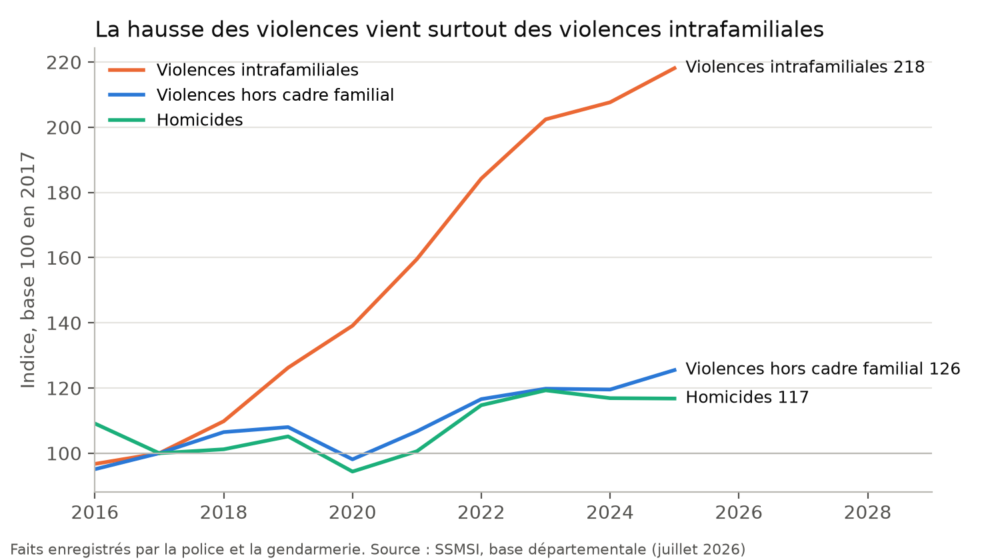

← Tous les thèmes · 2 sur 16
Sécurité, justice et narcotrafic
Le constat tient sur les prisons et les moyens de la justice, pas sur toute sa lecture de la délinquance.
- ✓Exact 1
- ≈Proche 3
- !À nuancer 2
- ◆Opinion ou promesse 2
6 affirmations et 2 mesures · 17 sources
1Ce qu'il dit
Ses mots, avant toute vérification. Les étiquettes numérotées renvoient à l'affirmation vérifiée plus bas, sous le même numéro.
Diagnostic
La « chaîne régalienne » s'effondrerait : l'État « ne protège plus », alors qu'il dépense plus que tous les autres. Trois maillons sont en cause :
La délinquance augmente
« + 51 % de coups et blessures volontaires et + 15 % d'homicides depuis 2017 » (2023), « les coups et blessures volontaires ont bondi de 50 % en dix ans, le nombre d'homicides a augmenté de 43 % » (2026). Le narcotrafic « gangrène même nos villages » et pèse « 3 à 6 milliards », puis « 8 milliards ».
La prison manque de place
Il « manque 20 000 places de prison depuis 15 ans », puis 30 000. D'où un « paradoxe » : une surpopulation carcérale et un « sous-taux d'incarcération par rapport aux autres pays ».
Les peines ne sont pas exécutées
« 40 % des peines d'emprisonnement ne sont pas exécutées au bout de six mois », « une condamnation sur deux n'est pas appliquée ». La justice serait sous-dotée : « budget le plus faible d'Europe », « 10,9 juges pour 100 000 habitants, la médiane étant de 17,7 ».
Il y ajoute l'argument du maire. La police municipale est « optionnelle » et présente dans « seulement 12 % des communes » : les maires compensent le retrait de l'État (+35 % d'effectifs en dix ans) (✓5Exact).
Mesures proposées
| Mesure | Ce qu'il en dit | Vérifié plus bas |
|---|---|---|
| Construire 20 000 places de prison (30 000 dans certaines prises de parole) | « Nous construirons enfin les 20 000 places de prison manquantes », dont une part pour les courtes peines et les primo-délinquants | ◆7Promesse |
| Abaisser la majorité pénale à 16 ans | et réduire l'excuse de minorité de 50 % à 20 ou 30 % de la peine, la lever dès 13 ans pour les crimes les plus graves | ◆8Promesse |
| Perpétuité réelle, exécution intégrale des peines, fin du non-cumul pour les crimes graves | discours de Saint-Raphaël (juillet 2026) | — |
| Peines planchers et expulsion des délinquants étrangers | individualisation de la peine limitée à 20 % du minimum | — |
| Responsabilité des magistrats, interdiction du Syndicat de la magistrature | « La justice doit être rendue au nom du peuple français, non des combats militants de certains magistrats » | — |
| Polices municipales armées et aux pouvoirs élargis | maintien de l'ordre, accès aux fichiers | — |
| Interdire les Frères musulmans | voir le thème Immigration, islamisme et identité | — |
2Ce que disent les chiffres
Une carte par affirmation : l'étiquette dit en quoi la phrase s'écarte des chiffres, la ligne en dessous dit pourquoi. Ouvrir une carte pour lire la citation exacte, l'explication, le calcul et les sources.
1≈Contexte manquant« + 51 % de coups et blessures volontaires et + 15 % d'homicides depuis 2017 » (26/05/2023)Les chiffres sont proches, mais les trois quarts de la hausse des violences viennent des violences intrafamiliales, que les victimes signalent beaucoup plus qu'avant.
« Derrière les chiffres de la délinquance et de la criminalité qui explosent ces dernières années (+ 51 % de coups et blessures volontaires et + 15 % d’homicides depuis 2017) »
David Lisnard, tribune, Emmanuel Macron parle de « décilivisation », et ensuite ?, 26 mai 2023
≈Contexte manquant
Le chiffre est juste, mais il manque l'élément qui change la lecture : année de départ choisie, cas extrême, méthode non dite.
Proche Confiance : forte
- Ce qu'il annonce
- Données publiques
Pourquoi
- Homicides enregistrés : 835 en 2017, 958 en 2022, soit +14,7 %. Son « + 15 % » est exact.
- Violences physiques enregistrées (intrafamiliales et hors cadre familial) : +44 % de 2017 à 2022 dans la série actuelle du SSMSI. Il cite +51 %. L'écart peut venir de l'ancien indicateur (« coups et blessures volontaires »), refondu par le SSMSI en 2024.
- La hausse est surtout intrafamiliale. Les violences intrafamiliales ont augmenté de 84 % sur la même période, celles hors cadre familial de 17 %. Sur 2017-2025, 76 % de la hausse des violences vient des violences intrafamiliales. Le SSMSI attribue une grande partie de cette hausse à de meilleurs signalements (libération de la parole, plaintes facilitées) et non à une hausse équivalente des faits.
- Ses autres versions :
- Exact : programme 2026, « homicides + 16 %, tentatives + 90 % » (2017-2025 : +17 % et +96 %).
- Faux : discours du 3 juillet 2026, « le nombre d'homicides a augmenté de 43 % » en dix ans. De 2016 à 2025, il passe de 911 à 975, soit +7 %. Les violences ont augmenté de 70 % sur dix ans, pas de 50 %.
- Non retrouvé : « + 12 % d'homicides depuis 2017 » (juillet 2022). La série actuelle donne +0,6 % de 2017 à 2021.

Ses autres formulations (4)
- « augmentation de 12 % des homicides depuis 2017, de 11 % des viols et de 32 % des coups et blessures volontaires » (21/07/2022)
- « En seulement 6 ans, les violences volontaires ont augmenté de 63% » (X, 01/2024)
- « depuis 2017, coups et blessures en hausse de 51 %, homicides en hausse de 16 %, tentatives d’homicides en hausse de 90% » (programme)
- « Les coups et blessures volontaires ont bondi de 50% en dix ans. Le nombre d’homicides a augmenté de 43% » (Saint-Raphaël, 03/07/2026)
Le calcul
Évolution de la délinquance enregistrée
- Entrée :
SSMSI-DELINQUANCE-DEP(faits enregistrés par la police et la gendarmerie, par département, 2016-2025, édition juillet 2026). Somme des départements = France entière (métropole et outre-mer). - Indicateurs : « Homicides », « Tentatives d'homicide », « Violences physiques intrafamiliales » et « Violences physiques hors cadre familial ». Leur somme sert d'équivalent aux « coups et blessures volontaires » des anciennes publications : le SSMSI a refondu ses indicateurs en 2024 et recalculé toute la série. Les chiffres publiés à l'époque (que Lisnard reprend) peuvent donc différer des séries actuelles.
- Calculs : évolution = valeur de l'année d'arrivée / valeur de l'année de départ − 1, sur les périodes citées par Lisnard (2017 → 2021, 2017 → 2022, 2017 → 2025, 2016 → 2025).
- Part de la hausse due aux violences intrafamiliales = hausse des violences intrafamiliales / hausse du total des violences physiques, 2017 → 2025.
- Limite : ce sont des faits enregistrés. Une hausse peut venir d'un meilleur dépôt de plainte (c'est le cas des violences conjugales depuis 2017, selon le SSMSI). L'enquête de victimation « Vécu et ressenti en matière de sécurité » permettrait de corriger cet effet ; son rapport n'a pas pu être téléchargé (site du ministère protégé).
Résultats du calcul
Ce qu'il dit : +51 % (2017-2022) ; +63 % en 6 ans · +15 % (2017-2022) · +51 % (programme) · +16 % (programme) · +90 % (programme) · +50 % en dix ans · +43 % en dix ans · +12 % (07/2022)
| Mesure | Cas | Valeur | Remarque |
|---|---|---|---|
| Hausse des faits enregistrés | Violences physiques (total), 2017 → 2022 | 44,08 % | 289579 → 417232 |
| Hausse des faits enregistrés | Homicides, 2017 → 2022 | 14,73 % | 835 → 958 |
| Hausse des faits enregistrés | Violences physiques hors cadre familial, 2017 → 2022 | 16,59 % | 171894 → 200410 |
| Hausse des faits enregistrés | Violences physiques intrafamiliales, 2017 → 2022 | 84,24 % | 117685 → 216822 |
| Hausse des faits enregistrés | Violences physiques (total), 2017 → 2025 | 63,14 % | 289579 → 472409 |
| Hausse des faits enregistrés | Homicides, 2017 → 2025 | 16,77 % | 835 → 975 |
| Hausse des faits enregistrés | Tentatives d'homicide, 2017 → 2025 | 96,02 % | 2284 → 4477 |
| Hausse des faits enregistrés | Violences physiques hors cadre familial, 2017 → 2025 | 25,5 % | 171894 → 215728 |
| Hausse des faits enregistrés | Violences physiques (total), 2016 → 2025 (dix ans) | 70,38 % | 277268 → 472409 |
| Hausse des faits enregistrés | Homicides, 2016 → 2025 (dix ans) | 7,03 % | 911 → 975 |
| Hausse des faits enregistrés (déclaration de juillet 2022) | Homicides, 2017 → 2021 | 0,6 % | 835 → 840 |
| Part de la hausse des violences physiques due aux violences intrafamiliales | 2017 → 2025 | 76,02 % | hausse en grande partie liée au meilleur signalement des violences conjugales (selon le SSMSI) |
Les sources (2)
- AMinistère de l'Intérieur (SSMSI) · Base départementale de la délinquance enregistrée par la police et la gendarmerie, 2016-2025 (édition juillet 2026) · relevé le 14/11/2026 ·
SSMSI-DELINQUANCE-DEP - AMinistère de l'Intérieur (SSMSI) · Documentation des bases statistiques de la délinquance (juillet 2026) · relevé le 14/11/2026 ·
SSMSI-DOCUMENTATION
2!Erreur de fait« Une surpopulation carcérale et un sous-taux d'incarcération par rapport aux autres pays, conséquence du manque de 20 000 places » (août 2023)Il manque bien plus de 20 000 places. Mais la France n'incarcère pas moins qu'ailleurs : son taux de détention est au-dessus de la médiane européenne.
« Avec ce paradoxe d’une surpopulation carcérale et d’un sous-taux d’incarcération par rapport aux autres pays, conséquence du manque de 20 000 places. »
David Lisnard, x : Tweets de David Lisnard (@davidlisnard) — août 2023, 18 août 2023 · voir la source
!Erreur de fait
Les données publiques disent autre chose.
À nuancer Confiance : forte
- Données publiques
- Point de comparaison
Pourquoi
- Le manque de places est réel et du bon ordre de grandeur. Au 1er septembre 2025, on compte 84 311 détenus pour 62 614 places opérationnelles (+21 700). Au 1er septembre 2026, 90 020 détenus pour 63 348 places (+26 700, densité 142 %). Le Sénat compte 22 361 places manquantes en octobre 2025 pour ramener chaque établissement à 100 %. Ses « 30 000 places » de 2025-2026 sont donc devenues plausibles.
- Le « sous-taux d'incarcération » est faux. Au 31 janvier 2024, la France compte 111,5 détenus pour 100 000 habitants, au-dessus de la médiane européenne (104,8) et bien au-dessus de l'Allemagne (71,2). La surpopulation vient d'un nombre de détenus en forte hausse, pas d'une incarcération plus faible qu'ailleurs.
Ses autres formulations (3)
- « Il nous manque 20 000 places de prison depuis 15 ans » (30/03/2025)
- « augmenter la capacité carcérale d’au moins 30 000 places » (06/10/2025)
- « nous n’avons pas les 30 000 places de prison nécessaires » (24/07/2026)
Le calcul
Places de prison et taux de détention
- Entrées :
DAP-DETENUS-2026-09etDAP-DETENUS-2025-09(tableau 6 : détenus et places opérationnelles, France entière) ;SENAT-PENITENTIAIRE-PLF2026(22 361 places manquantes au 1er octobre 2025, calculées établissement par établissement) ;COE-SPACE-I-2024(détenus pour 100 000 habitants au 31 janvier 2024, médiane de 51 administrations pénitentiaires). - Calcul : détenus − places opérationnelles. C'est un minimum : comme certains établissements ne sont pas pleins, supprimer toute suroccupation demande plus de places que cette différence (d'où le chiffre plus élevé du Sénat).
Résultats du calcul
Ce qu'il dit : 20 000 places manquantes ; 30 000 (2025-2026) · 20 000 / 30 000 · « sous-taux d'incarcération »
| Mesure | Cas | Valeur | Remarque |
|---|---|---|---|
| Détenus en surnombre (détenus − places opérationnelles) | France entière, 2026-09 | 26 672,0 détenus | 90020 détenus pour 63348 places ; densité 142.1 % |
| Détenus en surnombre (détenus − places opérationnelles) | France entière, 2025-09 | 21 697,0 détenus | 84311 détenus pour 62614 places ; densité 134.7 % |
| Places manquantes pour ramener la densité à 100 % dans chaque établissement | Sénat, octobre 2025 | 22 361,0 places | compte établissement par établissement : un établissement en sous-occupation ne compense pas une maison d'arrêt saturée |
| Taux de détention, France, pour 100 000 habitants | Europe (51 administrations), 31/01/2024 | 111,5 détenus pour 100 000 hab. | médiane européenne 104.8 ; Allemagne 71.2 |
Les sources (4)
- AConseil de l'Europe (SPACE I, Université de Lausanne) · Statistiques pénales annuelles du Conseil de l'Europe, SPACE I 2024 (prisons au 31 janvier 2024) · relevé le 14/11/2026 ·
COE-SPACE-I-2024 - AMinistère de la Justice (direction de l'administration pénitentiaire) · Statistique mensuelle de la population détenue et écrouée, situation au 1er septembre 2025 · relevé le 14/11/2026 ·
DAP-DETENUS-2025-09 - AMinistère de la Justice (direction de l'administration pénitentiaire) · Statistique mensuelle de la population détenue et écrouée, situation au 1er septembre 2026 · relevé le 14/11/2026 ·
DAP-DETENUS-2026-09 - BSénat (commission des lois) · Avis sur le PLF 2026, administration pénitentiaire : synthèse (détenus, densité, places) · relevé le 14/11/2026 ·
SENAT-PENITENTIAIRE-PLF2026
3!Périmètres mélangés« 40 % des peines d'emprisonnement ne sont pas exécutées au bout de six mois » (FAQ, 31/08/2026)42 % des peines ne sont pas exécutées le jour du jugement, mais 21 % un an après et 10 % cinq ans après. Son chiffre décrit le jour du jugement, pas « six mois ».
« Que la justice a adapté sa doctrine à sa pénurie de moyens : il avance que 40 % des peines d’emprisonnement ne sont pas exécutées au bout de six mois. »
David Lisnard, faq nouvelle énergie, Quel est le constat de David Lisnard sur la justice ?, 31 août 2026 · voir la source
!Périmètres mélangés
Le chiffre existe, mais il ne mesure pas ce que dit la phrase, ou il est comparé à un chiffre qui ne couvre pas la même chose.
À nuancer Confiance : moyenne (le taux à six mois n'est pas publié)
- Ce qu'il annonce
- Données publiques
Pourquoi
- En 2025, 42 % des peines de prison ferme ne sont pas mises à exécution le jour du jugement. Un an après, 21 % restent à exécuter (2024). Cinq ans après, 10 % ne l'ont jamais été.
- À six mois, la part non exécutée est donc entre 21 % et 42 %, très probablement nettement sous 40 %. Son chiffre correspond à la situation au jugement, ou aux données anciennes (le taux d'exécution immédiate n'était que de 30 % de 2017 à 2019, d'où son « 45 % » de 2021).
- « Une condamnation sur deux n'est pas appliquée » (mars 2025) est faux : 90 % des peines de prison ferme sont exécutées dans les cinq ans.
- Il a raison sur un point : une part notable des courtes peines n'est exécutée qu'après plusieurs mois.
Ses autres formulations (2)
- « 45 % des peines de prison ne sont toujours pas exécutées six mois après avoir été prononcées » (tribune, 08/03/2021)
- « une condamnation sur deux n'est pas appliquée parce qu'on manque d'équipement » (Grand Angle, 30/03/2025)
Le calcul
Exécution des peines
- Entrées :
RSJ-2025-EXECUTION(taux de mise à exécution des peines d'emprisonnement ferme : 57 % au jugement et 79 % à un an, en 2024) ;RSJ-2026-EXECUTION(58 % au jugement en 2025, 90 % à cinq ans pour les peines devenues exécutoires en 2020) ;IGJ-EXECUTION-PEINES-2022. - Calcul : part non exécutée = 100 − taux de mise à exécution, à chaque horizon. Le taux à six mois n'est pas publié dans ces fichiers : il est compris entre le taux au jugement et le taux à un an.
Résultats du calcul
Ce qu'il dit : 40 % au bout de six mois · « une condamnation sur deux n'est pas appliquée » · 45 % non exécutées à six mois (2021)
| Mesure | Cas | Valeur | Remarque |
|---|---|---|---|
| Peines d'emprisonnement ferme non exécutées un an après | peines devenues exécutoires, 2024 | 21,0 % | |
| Peines non mises à exécution immédiatement (au jugement) | 2025 | 42,0 % | |
| Peines jamais mises à exécution cinq ans après | peines exécutoires en 2020, à cinq ans | 10,0 % | |
| Taux d'exécution immédiate (rapport IGJ de mars 2022) | IGJ, 2021 | 45,0 % | il était d'environ 30 % de 2017 à 2019 |
Les sources (3)
- AMinistère de la Justice (SDSE) · Références statistiques justice, édition 2025, chapitre 12 : exécution et application des peines · relevé le 14/11/2026 ·
RSJ-2025-EXECUTION - AMinistère de la Justice (SDSE) · Références statistiques justice, édition 2026, fiche 12.1 : mise à exécution des peines d'emprisonnement ferme · relevé le 14/11/2026 ·
RSJ-2026-EXECUTION - BInspection générale de la justice · Exécution des peines d'emprisonnement ferme, rapport n° 022-22 (mars 2022) · relevé le 14/11/2026 ·
IGJ-EXECUTION-PEINES-2022
4≈Superlatif« Le budget de la justice est de loin le plus faible d'Europe (0,20 % du PIB) ainsi que par le nombre des juges (10,9 pour 100 000 habitants, la médiane étant de 17,7) » (programme)La France a bien environ deux fois moins de juges que la médiane. « Le budget le plus faible d'Europe » n'a pas pu être vérifié, et la CEPEJ ne classe pas la France dernière.
« Le budget de la justice est de loin le plus faible d’Europe (0,20% du PIB) ainsi que par le nombre des juges (10,9 pour 100 000 habitants, la médiane étant de 17,7) et procureurs. »
David Lisnard, programme : Programme Nouvelle Énergie — reussir-une-nouvelle-ambition-francaise · voir la source
≈Superlatif
« Record », « premier », « dernier » : la France est bien ou mal placée, mais pas à la place annoncée.
Proche Confiance : moyenne
- Ce qu'il annonce
- Données publiques
Pourquoi
- En 2024, la France compte 11,6 juges professionnels pour 100 000 habitants, contre une médiane de 23,4 dans l'UE. Elle a aussi 3,2 procureurs contre 11,4. Ses chiffres (10,9 et 17,7) sont plus anciens et calculés sur l'ensemble du Conseil de l'Europe, mais le constat est le même : la France a environ deux fois moins de juges que la médiane.
- « De loin le plus faible d'Europe » pour le budget n'a pas pu être vérifié avec les fichiers téléchargés. La CEPEJ ne classe pas la France dernière ; il faudrait la base CEPEJ-STAT.
Le calcul
Moyens de la justice comparés à l'Europe
- Entrée :
CEPEJ-FRANCE-2024(fiche France de l'étude CEPEJ pour la Commission européenne, données 2024 : juges et procureurs pour 100 000 habitants, France et médiane de l'UE). - Le budget en % du PIB n'est pas dans ce fichier : non vérifié ici.
Résultats du calcul
Ce qu'il dit : 10,9 ; médiane 17,7
| Mesure | Cas | Valeur | Remarque |
|---|---|---|---|
| Juges professionnels pour 100 000 habitants (France) | UE à 27, 2024 | 11,6 pour 100 000 hab. | médiane UE 23.4 |
| Procureurs pour 100 000 habitants (France) | UE à 27, 2024 | 3,2 pour 100 000 hab. | médiane UE 11.4 |
Les sources (1)
- AConseil de l'Europe (CEPEJ), étude pour la Commission européenne · Systèmes judiciaires des États membres de l'UE, fiche pays France (données 2024) · relevé le 14/11/2026 ·
CEPEJ-FRANCE-2024
5✓Exact« La police municipale, présente dans seulement 12 % des communes » (22/08/2026)4 592 communes ou intercommunalités ont une police municipale, sur 34 969 communes : 11 à 13 %.
« s’appuie sur la police municipale, présente dans seulement 12 % des communes. »
David Lisnard, faq nouvelle énergie, Quel candidat propose de redonner des moyens aux forces de l’ordre ?, 22 août 2026 · voir la source
✓Exact
Confirmé par les données publiques.
Exact Confiance : forte
- Ce qu'il annonce
- Données publiques
Pourquoi
- En 2024, 4 592 communes ou intercommunalités ont un service de police municipale, sur 34 969 communes. Cela fait au plus 13 % des communes, et 11 % si l'on ne compte que les lignes ayant au moins un agent.
- Sa version de septembre 2024, « 20 % des communes », était fausse. « 10 % », « 14 % » et « 86 % n'en ont pas » sont cohérents.
- Les effectifs sont passés de 20 448 policiers municipaux en 2014 à 28 846 en 2024 (+41 %). Ses « + 35 % » et « + 36 % » en dix ans sont un peu en dessous de la réalité.
Ses autres formulations (5)
- « Seulement 10% des 35 000 communes de France disposent d’une Police Municipale » (23/03/2023)
- « il y a 20% des communes qui ont une police municipale » (Sud Radio, 25/09/2024)
- « 86 % des communes françaises ne disposent d’aucune police municipale » (30/06/2026)
- « la police municipale dans 14 % des communes » (23/10/2026)
- « + 36 % d’effectifs de police municipale en dix ans, pour un coût de 2,2 milliards d’euros par an » (04/02/2026)
Le calcul
Polices municipales
- Entrées :
PM-EFFECTIFS-2024(enquête annuelle du ministère de l'Intérieur : ligne « TOTAL NATIONAL », 4 592 communes ou intercommunalités ayant un service, 28 846 policiers municipaux) ;PM-EFFECTIFS-2014(ligne « totaux » : 20 448 policiers municipaux) ;GEO-COMMUNES(34 969 communes). - Calculs : services / communes (borne haute, car un service intercommunal couvre plusieurs communes) ; lignes ayant au moins un policier municipal / communes (borne basse) ; évolution des effectifs 2014 → 2024.
Résultats du calcul
Ce qu'il dit : 12 % ; 10 % ; 20 % ; 14 % · 12 % · +35 % / +36 % en dix ans
| Mesure | Cas | Valeur | Remarque |
|---|---|---|---|
| Communes ou intercommunalités ayant un service de police municipale / nombre de communes | 2024 | 13,13 % | 4592 services sur 34969 communes ; borne haute (un service intercommunal couvre plusieurs communes) |
| Lignes avec au moins un policier municipal / nombre de communes | 2024 | 10,94 % | 3824 lignes |
| Hausse des effectifs de policiers municipaux | 2014 → 2024 | 41,07 % | 20448 → 28846 agents |
Les sources (3)
- AMinistère de l'Intérieur · Effectifs de police municipale par commune, 2014 · relevé le 14/11/2026 ·
PM-EFFECTIFS-2014 - AMinistère de l'Intérieur · Effectifs de police municipale par commune, 2024 · relevé le 14/11/2026 ·
PM-EFFECTIFS-2024 - AÉtat (API Découpage administratif, geo.api.gouv.fr, données Insee/IGN) · Liste des communes françaises (code, nom, population) · relevé le 14/11/2026 ·
GEO-COMMUNES
6≈Source fragile« Le chiffre d'affaires annuel du narcotrafic est estimé entre 3 et 6 milliards € » (mai 2024)Le Sénat retient 3,5 Md€ « en fourchette basse » : sa fourchette est cohérente. Son « 8 milliards » de 2026 n'a aucune source publique.
« En France, le chiffre d’affaires annuel du narcotrafic est estimé entre 3 et 6 milliards €. »
David Lisnard, x : Tweets de David Lisnard (@davidlisnard) — mai 2024, 15 mai 2024 · voir la source
≈Source fragile
Pas de source, source mal attribuée, ou source proche de ses thèses.
Proche Confiance : moyenne
Pourquoi
- La commission d'enquête du Sénat (mai 2024) retient « 3,5 milliards d'euros, en fourchette basse », chiffre du ministère de l'Économie. Sa fourchette est cohérente.
- « 8 milliards » (août 2026) : aucune source publique trouvée pour ce montant. Invérifiable en l'état.
Ses autres formulations (1)
- « le chiffre d'affaires du narcotrafic, on l'évalue à 8 milliards » (28/08/2026)
Le calcul
Narcotrafic
- Entrée :
SENAT-NARCOTRAFIC-2024(« 3,5 milliards d'euros, en fourchette basse », chiffre du ministre de l'Économie). Aucun calcul.
Résultats du calcul
Ce qu'il dit : 3 à 6 Md€ (2024) ; 8 Md€ (2026)
| Mesure | Cas | Valeur | Remarque |
|---|---|---|---|
| Chiffre d'affaires annuel du narcotrafic, fourchette basse | Sénat 2024 (ministre de l'Économie) | 3,5 Md€ |
Les sources (1)
- BSénat (commission d'enquête) · Rapport n° 588 (2023-2024) sur l'impact du narcotrafic en France : l'essentiel · relevé le 14/11/2026 ·
SENAT-NARCOTRAFIC-2024
7◆PromesseMesure : « Nous construirons enfin les 20 000 places de prison manquantes » (03/07/2026)Le besoin est confirmé (22 361 places manquantes selon le Sénat). Coût estimé : environ 7,4 Md€. Le plan précédent, prévu pour 2027, n'avait livré que 7 504 places sur 15 000 fin 2025.
« Nous construirons enfin les 20 000 places de prison manquantes »
David Lisnard, discours : Discours de David Lisnard à Saint-Raphaël, 3 juillet 2026
◆Promesse
Un choix politique ou une mesure à venir : seuls les faits et les ordres de grandeur qui l'entourent sont vérifiés.
Opinion ou promesse
Pourquoi
- Le besoin existe : 22 361 places manquent selon le Sénat (octobre 2025), plus aujourd'hui.
- Coût d'investissement estimé : environ 7,4 Md€ pour 20 000 places, au coût moyen du plan 15 000 (5,55 Md€, soit 370 000 € par place). Fonctionnement : environ 0,9 Md€ par an une fois les places occupées (128 € par jour de détention).
- Le précédent invite à la prudence sur les délais. Le plan 15 000, lancé en 2018 pour 2027, n'avait livré que 7 504 places brutes fin octobre 2025.
Ses autres formulations (2)
- répété depuis 2021
- « au moins 30 000 places » (06/10/2025)
Le calcul
Le coût de 20 000 places — ESTIMATION
- Entrées :
SENAT-PLAN15000-2023(coût total du plan 15 000 réévalué à 5,55 Md€ en juin 2023) ;SENAT-PENITENTIAIRE-PLF2026(coût moyen d'une journée de détention : 128 € en 2024 ; 7 504 places brutes livrées fin octobre 2025). - Calculs : coût par place = 5,55 Md€ / 15 000 ; 20 000 places × ce coût ; fonctionnement = 20 000 × 128 € × 365.
- Estimation, non fiable à 100 % : coût moyen d'un programme en cours, sans l'inflation depuis 2023 ni le personnel supplémentaire à recruter au-delà du coût moyen de détention.
Résultats du calcul
Ce qu'il dit : « elles ne sont toujours pas faites »
| Mesure | Cas | Valeur | Remarque |
|---|---|---|---|
| Coût d'investissement moyen par place | plan 15 000 (Sénat, juin 2023) | 370,0 k€ par place | ESTIMATION, non fiable à 100 % : coût moyen d'un plan en cours, hors inflation après 2023 |
| Coût d'investissement estimé | 20 000 places | 7,4 Md€ | ESTIMATION, non fiable à 100 % : 20 000 × coût moyen du plan 15 000 |
| Coût de fonctionnement annuel estimé | 20 000 places occupées | 0,93 Md€ par an | ESTIMATION, non fiable à 100 % : coût moyen d'une journée de détention (128 €) × 365 × 20 000 |
| Places brutes livrées depuis 2018 | plan 15 000, octobre 2025 | 7 504,0 places |
Les sources (2)
- AMinistère de l'Intérieur (SSMSI) · Base départementale de la délinquance enregistrée par la police et la gendarmerie, 2016-2025 (édition juillet 2026) · relevé le 14/11/2026 ·
SSMSI-DELINQUANCE-DEP - BSénat (commission des finances) · Rapport d'information n° 37 (2023-2024) sur le plan 15 000 places et les centres éducatifs fermés : l'essentiel · relevé le 14/11/2026 ·
SENAT-PLAN15000-2023
8◆PromesseMesure : « Abaisser à 16 ans l'âge de la majorité pénale et diminuer l'excuse de minorité, pour la porter de 50 % de la peine à 20 ou 30 % » (23/10/2026)Obstacle constitutionnel probable : l'atténuation de la responsabilité pénale des mineurs selon l'âge est un principe fondamental reconnu par le Conseil constitutionnel.
« S’agissant des mineurs, je propose d’abaisser à 16 ans l’âge de la majorité pénale et de diminuer l’excuse de minorité, pour la porter de 50 % de la peine aujourd’hui à 20 ou 30 %. »
David Lisnard, articles : «Quand Macron a parlé, pas un casseur n’a tremblé», 23 octobre 2026 · voir la source
◆Promesse
Un choix politique ou une mesure à venir : seuls les faits et les ordres de grandeur qui l'entourent sont vérifiés.
Opinion ou promesse
Pourquoi
- Le Conseil constitutionnel (décision 2002-461 DC) a reconnu comme principe fondamental « l'atténuation de la responsabilité pénale des mineurs en fonction de l'âge ». Traiter les 16-17 ans exactement comme des majeurs heurterait ce principe et demanderait probablement une révision de la Constitution.
- Réduire l'excuse de minorité dans certains cas reste possible : la loi a déjà permis de l'écarter pour des mineurs de 16 ans récidivistes. À soumettre à des constitutionnalistes, comme le suggère le dossier du collègue.
Le calcul
Majorité pénale à 16 ans
- Entrée :
CC-2002-461-DC, considérant 26 : « l'atténuation de la responsabilité pénale des mineurs en fonction de l'âge » est un principe fondamental reconnu par les lois de la République. Aucun calcul : analyse juridique résumée, à confirmer par des constitutionnalistes.
3Conclusion
Le constat de Lisnard tient sur les prisons et les moyens de la justice, mais pas sur toute sa lecture des chiffres.
Ce qui tient :
- la France manque d'environ 22 000 places de prison (fin 2025), et de plus de 26 000 en septembre 2026 ;
- elle a deux fois moins de juges par habitant que la médiane de l'UE ;
- les homicides enregistrés ont augmenté de 15 % entre 2017 et 2022.
Ce qui ne tient pas :
- la hausse des violences vient pour les trois quarts des violences intrafamiliales, que les victimes signalent beaucoup plus qu'avant. Les violences hors du cadre familial ont augmenté de 25 % en huit ans, pas de 51 % ;
- la France n'a pas un « sous-taux d'incarcération » : elle incarcère plus que la médiane européenne ;
- « 40 % des peines non exécutées au bout de six mois » correspond plutôt au taux au jour du jugement. Cinq ans après, 90 % des peines de prison ferme sont exécutées, pas une sur deux ;
- en 2026, il annonce « + 43 % d'homicides en dix ans » : la hausse est de 7 %.
Conventions de calcul
Résultats produits par calculer.py à partir de brut/ (catalogue sources.csv), écrits dans resultats.csv. Les chiffres lus dans des PDF sont recopiés dans LUS_DANS_LES_PDF avec la phrase exacte ; le script vérifie qu'elle figure dans le PDF avant de calculer. Données téléchargées le 14/11/2026.
Toutes les sources du thème (17)
A Statistique publique (Insee, Eurostat, OCDE, ministères…) · B Contrôle et évaluation (Cour des comptes, Sénat, Assemblée…)
- AConseil constitutionnel · Décision n° 2002-461 DC du 29 août 2002 (justice des mineurs) · relevé le 14/11/2026 ·
CC-2002-461-DC - AConseil de l'Europe (CEPEJ), étude pour la Commission européenne · Systèmes judiciaires des États membres de l'UE, fiche pays France (données 2024) · relevé le 14/11/2026 ·
CEPEJ-FRANCE-2024 - AConseil de l'Europe (SPACE I, Université de Lausanne) · Statistiques pénales annuelles du Conseil de l'Europe, SPACE I 2024 (prisons au 31 janvier 2024) · relevé le 14/11/2026 ·
COE-SPACE-I-2024 - AMinistère de l'Intérieur · Effectifs de police municipale par commune, 2014 · relevé le 14/11/2026 ·
PM-EFFECTIFS-2014 - AMinistère de l'Intérieur · Effectifs de police municipale par commune, 2024 · relevé le 14/11/2026 ·
PM-EFFECTIFS-2024 - AMinistère de l'Intérieur (SSMSI) · Base départementale de la délinquance enregistrée par la police et la gendarmerie, 2016-2025 (édition juillet 2026) · relevé le 14/11/2026 ·
SSMSI-DELINQUANCE-DEP - AMinistère de l'Intérieur (SSMSI) · Documentation des bases statistiques de la délinquance (juillet 2026) · relevé le 14/11/2026 ·
SSMSI-DOCUMENTATION - AMinistère de la Justice (SDSE) · Références statistiques justice, édition 2025, chapitre 12 : exécution et application des peines · relevé le 14/11/2026 ·
RSJ-2025-EXECUTION - AMinistère de la Justice (SDSE) · Références statistiques justice, édition 2026, fiche 12.1 : mise à exécution des peines d'emprisonnement ferme · relevé le 14/11/2026 ·
RSJ-2026-EXECUTION - AMinistère de la Justice (direction de l'administration pénitentiaire) · Statistique mensuelle de la population détenue et écrouée, situation au 1er septembre 2025 · relevé le 14/11/2026 ·
DAP-DETENUS-2025-09 - AMinistère de la Justice (direction de l'administration pénitentiaire) · Statistique mensuelle de la population détenue et écrouée, situation au 1er septembre 2026 · relevé le 14/11/2026 ·
DAP-DETENUS-2026-09 - AÉtat (API Découpage administratif, geo.api.gouv.fr, données Insee/IGN) · Liste des communes françaises (code, nom, population) · relevé le 14/11/2026 ·
GEO-COMMUNES - BAssemblée nationale (question écrite et réponse du ministère) · Question écrite n° 12391 (16e législature) sur le coût du plan 15 000 places · relevé le 14/11/2026 ·
AN-QE-12391-PRISONS - BInspection générale de la justice · Exécution des peines d'emprisonnement ferme, rapport n° 022-22 (mars 2022) · relevé le 14/11/2026 ·
IGJ-EXECUTION-PEINES-2022 - BSénat (commission d'enquête) · Rapport n° 588 (2023-2024) sur l'impact du narcotrafic en France : l'essentiel · relevé le 14/11/2026 ·
SENAT-NARCOTRAFIC-2024 - BSénat (commission des finances) · Rapport d'information n° 37 (2023-2024) sur le plan 15 000 places et les centres éducatifs fermés : l'essentiel · relevé le 14/11/2026 ·
SENAT-PLAN15000-2023 - BSénat (commission des lois) · Avis sur le PLF 2026, administration pénitentiaire : synthèse (détenus, densité, places) · relevé le 14/11/2026 ·
SENAT-PENITENTIAIRE-PLF2026